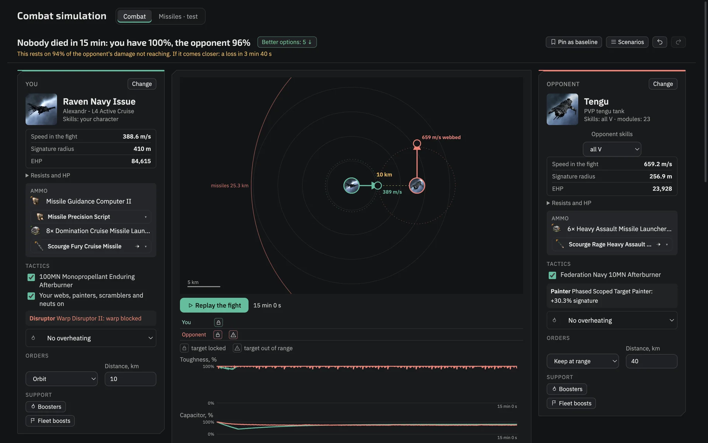
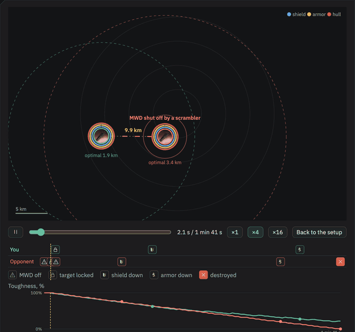

Combat simulator
A separate window that pits your fit against an opponent — any saved fit, one of your in-game fits, an EFT paste or a bare hull — and flies the fight over time.
The fight, second by second
Ships fly under orders — orbit, keep at range, approach, flee, stop or a course you drag on the map — with real inertia and turning.
- Weapons cycle, reload and spool up; the capacitor drains and recharges; neutralizers and nosferatus bite
- Ancillary repairers run dry, the Reactive Armor Hardener adapts cycle by cycle, an assault damage control fires in bursts
- Applied DPS for every weapon with the reason it’s reduced: tracking, falloff, explosion radius or velocity
- Webs, painters, scrams and prop modules with falloff and stacking penalties; boosters, fleet boosts and overheating with burnout on either side

What would change the fight
The same setup fought from 24 starting distances and with one change at a time — ammo, overheating, prop module, range — and the changes that matter most named, the bad ones too.
- The verdict warns when a result only holds because the opponent’s damage doesn’t reach you, and says what happens if they close in
- Compare with a baseline: pin a setup and see what each change moved; undo / redo for every change
- Scenarios to save by name or share with a corpmate as one line of text

Replay and “Find the best”
Replay the fight on the map — shots, hit-point rings, events — with the toughness, capacitor and distance charts as the seek bar.
- Find the best tries ranges, flying modes, ammo and MWD/AB as real fights and offers the winner
- Shows how it holds if the opponent closes in or keeps away, and names what holds your fit back

Missile lab
Fire any missile at any ship in 3D: the blast grows at its explosion velocity while the target slips away, both to scale, with the game’s formula next to it. Signature, speed, explosion radius and velocity finally make sense.

Fight the battle before you undock
Free, no ads, no subscriptions. Windows, macOS and Linux — and a separate app for iPhone and iPad.